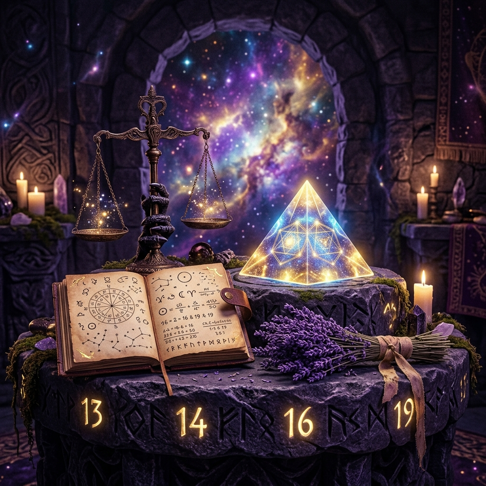

¿Te has preguntado alguna vez por qué ciertas dificultades parecen repetirse en tu vida de forma persistente, casi como si siguieran un guión invisible? En el estudio místico de los números, esta repetición no es una casualidad desafortunada. La numerología pitagórica sostiene que el alma realiza un viaje de múltiples reencarnaciones para aprender y evolucionar. En ese trayecto, cuando cometemos transgresiones graves contra las leyes del amor, la libertad o el orden, o cuando dejamos tareas evolutivas incompletas, generamos lo que conocemos como una deuda kármica.

Estas deudas se registran en nuestro mapa natal bajo la forma de cuatro números muy específicos: **el 13, el 14, el 16 y el 19**. Identificar si posees alguno de estos números kármicos y comprender su vibración es el primer paso para liberar al alma de ataduras invisibles y transmutar la energía densa en sabiduría luminosa.
¿Cómo descubrir tus Números Kármicos?
Los números kármicos pueden aparecer en diferentes áreas de tu mapa numerológico. La forma más directa de localizarlos es a través de tu **día de nacimiento** o de los cálculos de tus números esenciales (como el Sendero de Vida, la personalidad o el alma):
- Por día de nacimiento directo: Si naciste un día 13, 14, 16 o 19 de cualquier mes, llevas esta deuda kármica de forma directa en tu vibración de personalidad exterior.
- Por reducción de sumas intermedias: Al calcular tu **Sendero de Vida** (sumando día + mes + año de nacimiento), presta atención a los resultados antes de la reducción final a un solo dígito. Por ejemplo, si tu fecha de nacimiento suma un total de 13, 14, 16 o 19 que luego reduces a 4, 5, 7 o 1, llevas esa deuda latente en tu misión de vida.
El análisis profundo de los 4 Números Kármicos
Cada una de estas cifras describe una deuda específica adquirida en encarnaciones previas y la tarea correctora que debes realizar hoy:
1. Número Kármico 13 (La Deuda del Trabajo y la Constancia) - Se reduce a 4
En vidas pasadas, la persona con vibración 13 abusó de la pereza, delegó sus responsabilidades en otros o actuó de forma inconstante y caótica, dejando proyectos vitales a medias y viviendo a costa del esfuerzo ajeno.
- Cómo se manifiesta hoy: La persona suele encontrarse con obstáculos recurrentes que le exigen trabajar el doble que a los demás para conseguir el mismo resultado. Puede sentir frustración, ganas de abandonar ante el primer obstáculo o una sensación de que todo le cuesta un esfuerzo titánico.
- Cómo transmutarlo: La clave de sanación es el orden, la disciplina férrea y la constancia. El 13 exige aprender a disfrutar del esfuerzo constructivo, erradicar la procrastinación y comprender que el éxito real es el resultado de bases firmes y honestas.
2. Número Kármico 14 (La Deuda del Abuso de Libertad) - Se reduce a 5
Esta deuda se genera al haber tenido vidas pasadas caracterizadas por el libertinaje absoluto, la irresponsabilidad, el abuso de los placeres físicos a costa del dolor ajeno o la huida constante ante el menor compromiso afectivo o social.
- Cómo se manifiesta hoy: La persona experimenta cambios bruscos e inesperados en su vida (pérdidas de empleo, mudanzas imprevistas, rupturas amorosas súbitas). Hay una tendencia a buscar escapes rápidos a través de excesos o a vivir con un miedo constante a perder la libertad, lo que impide crear raíces sanas.
- Cómo transmutarlo: Exige aprender a experimentar la libertad con responsabilidad y autocontrol. La persona debe comprender que la verdadera libertad no es hacer lo que uno quiere en cada instante, sino la capacidad de comprometerse con un propósito superior sin sentirse prisionero. La templanza es su mayor medicina.
3. Número Kármico 16 (La Deuda del Orgullo y el Ego) - Se reduce a 7
Esta es una de las deudas más complejas. Se origina al haber utilizado el poder, la belleza, el intelecto o el estatus en encarnaciones previas para humillar, manipular o mirar por encima del hombro a los demás, viviendo desde un ego inflado y egocéntrico.
- Cómo se manifiesta hoy: Se asocia con la carta de La Torre en el Tarot. El individuo experimenta 'caídas' espectaculares o destrucciones repentinas de aquello que ha construido desde el orgullo (negocios exitosos que quiebran, relaciones idílicas que se desmoronan de golpe). El universo destruye lo falso para obligar al alma a mirar lo esencial.
- Cómo transmutarlo: Requiere el desarrollo de la humildad absoluta y la introspección espiritual. La persona debe aprender a construir su vida sobre valores invisibles y eternos, desapegándose de la necesidad de aprobación social y del brillo puramente superficial.
4. Número Kármico 19 (La Deuda del Abuso de Poder y Egoísmo) - Se reduce a 1
En el pasado, el alma del 19 ocupó puestos de gran autoridad o liderazgo pero actuó con tiranía, egoísmo ciego y desprecio absoluto por los derechos y necesidades de quienes dependían de él, buscando únicamente el beneficio propio.
- Cómo se manifiesta hoy: La persona suele encontrarse en situaciones de profunda soledad o aislamiento donde nadie parece acudir en su ayuda, obligándole a resolverlo todo por su cuenta. Puede sentir que el entorno le rechaza o que sus opiniones no son valoradas por los demás.
- Cómo transmutarlo: La misión de este número es aprender a liderar desde el servicio incondicional. La persona debe utilizar su gran fuerza de voluntad e independencia para guiar, proteger y empoderar a otros, desterrando cualquier atisbo de soberbia y egoísmo.
El ritual de liberación kármica numérica
Si has descubierto que llevas un número kármico, no te asustes. El karma no es un castigo divino; es una ley universal de causa y efecto diseñada para el aprendizaje. Para iniciar tu liberación y transmutación energética, te aconsejamos realizar este sencillo ritual en una noche de Luna Menguante:
- Escribe tu número kármico en un papel blanco con tinta negra. A su lado, escribe la deudora o patrón que reconoces en ti hoy (ej. *'Procrastinación y abandono de metas'* para el 13).
- Enciende una vela morada (el color de la transmutación espiritual) y quema un sahumerio de romero o lavanda.
- Sostén el papel y repite con voz firme: *“Reconozco el aprendizaje de mi pasado y libero con amor esta deuda. Asumo la responsabilidad de mi presente en luz y armonía. Quedo libre.”*
- Quema el papel en la llama de la vela morada y deja que las cenizas se vayan con el aire o la tierra exterior de tu hogar.
Conclusión: De la Deuda a la Maestría
Los números kármicos que portamos no son una condena inalterable. Al contrario: cuando los reconocemos y trabajamos en su polo de luz, se transforman en nuestros mayores talentos y fortalezas espirituales. Quien transmuta un 13 se convierte en un constructor incansable; el 14 en un guía sabio de la libertad; el 16 en un faro de espiritualidad profunda; y el 19 en un líder compasivo ejemplar.
🔮 Calcula tu vibración exacta: ¿Quieres saber cuál es tu Sendero de Vida y si tu fecha de nacimiento oculta alguna vibración kármica latente? Introduce tus datos en nuestra sección interactiva de Numerología Astral y recibe tu lectura numerológica personalizada al instante.